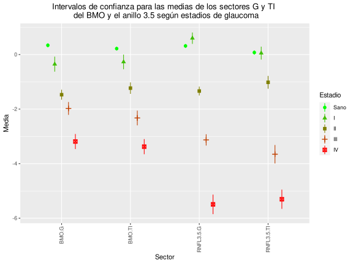

| Variables usadas en el modelo | Precisión global con ojos sanos | Precisión global sin ojos sanos |
|---|---|---|
| Todas las variables | 0.9204 | 0.8769 |
| Sectoress G y TI del BMO y todos los RNFL | 0.9381 | 0.8870 |
| Sectores G del BMO y G y TI de todos los RNFL | 0.9381 | 0.8860 |
| Sectores G del BMO y todos los RNFL y TI del RNFL 3.5 | 0.9425 | 0.8880 |
| Sectores G y TI de todos los RNFL | 0.9115 | 0.8638 |
| Sectores G del BMO y todos los RNFL | 0.8850 | 0.8789 |
| Sectores TI del BMO y todos los RNFL | 0.7080 | 0.8375 |
| Sectores G y TI del BMO y el RNFL 3.5 | 0.9204 | 0.8829 |
| Sectores G del BMO y G y TI del RNFL 3.5 | 0.9204 | 0.8890 |
| Sectores G y TI del BMO | 0.5929 | 0.8375 |
| Sectores G y TI de RNFL 3.5 | 0.8894 | 0.8648 |
| Sectores G del BMO y RNFL 3.5 | 0.8894 | 0.8799 |
| Sectores TI del BMO y RNFL 3.5 | 0.6991 | 0.8385 |
| Sector G del BMO | 0.5664 | 0.8285 |
| Sector G del RNFL 3.5 | 0.8717 | 0.8557 |
| Sector TI del BMO | 0.5973 | 0.8214 |
| Sector TI del RNFL 3.5 | 0.6416 | 0.8224 |
| I | II | III | IV | |
|---|---|---|---|---|
| I | 47 | 1 | 0 | 0 |
| II | 4 | 75 | 4 | 0 |
| III | 0 | 2 | 49 | 4 |
| IV | 0 | 0 | 3 | 37 |
| Sensibilidad | Especificidad | Precisión.Global | |
|---|---|---|---|
| Estadio I | 0.9216 | 0.9943 | 0.9579 |
| Estadio II | 0.9615 | 0.9459 | 0.9537 |
| Estadio III | 0.8750 | 0.9647 | 0.9199 |
| Estadio IV | 0.9024 | 0.9838 | 0.9431 |
| Sano | I | II | III | IV | |
|---|---|---|---|---|---|
| Sano | 745 | 41 | 37 | 1 | 0 |
| I | 9 | 10 | 2 | 1 | 0 |
| II | 10 | 0 | 36 | 8 | 0 |
| III | 1 | 0 | 3 | 45 | 8 |
| IV | 0 | 0 | 0 | 1 | 33 |
| Sensibilidad | Especificidad | Precisión.Global | |
|---|---|---|---|
| Estadio Sano | 0.9739 | 0.6504 | 0.8121 |
| Estadio I | 0.1961 | 0.9872 | 0.5917 |
| Estadio II | 0.4615 | 0.9803 | 0.7209 |
| Estadio III | 0.8036 | 0.9872 | 0.8954 |
| Estadio IV | 0.8049 | 0.9989 | 0.9019 |
Coeficientes de las funciones discriminantes lineales:
| LD1 | LD2 | LD3 | |
|---|---|---|---|
| BMO.G | -0.1881 | 0.7502 | -0.9165 |
| BMO.TI | -0.0943 | -0.2901 | 1.5660 |
| RNFL3.5.G | -0.8857 | 0.4810 | 0.0849 |
| RNFL3.5.TI | -0.4108 | -0.6927 | -0.5217 |
| I | II | III | IV | |
|---|---|---|---|---|
| I | 45 | 0 | 0 | 0 |
| II | 6 | 75 | 4 | 0 |
| III | 0 | 3 | 50 | 3 |
| IV | 0 | 0 | 2 | 38 |
| Sensibilidad | Especificidad | Precisión.Global | |
|---|---|---|---|
| Estadio I | 0.8824 | 1.0000 | 0.9412 |
| Estadio II | 0.9615 | 0.9324 | 0.9470 |
| Estadio III | 0.8929 | 0.9647 | 0.9288 |
| Estadio IV | 0.9268 | 0.9892 | 0.9580 |
Coeficientes de las funciones discriminantes lineales:
| LD1 | LD2 | LD3 | LD4 | |
|---|---|---|---|---|
| BMO.G | -0.2069 | 1.2241 | -0.2007 | -1.1987 |
| BMO.TI | -0.1555 | -0.4096 | -0.2255 | 1.7378 |
| RNFL3.5.G | -0.6034 | -0.1298 | 1.0720 | 0.2322 |
| RNFL3.5.TI | -0.2950 | -0.4165 | -0.8337 | -0.6390 |
| Sano | I | II | III | IV | |
|---|---|---|---|---|---|
| Sano | 755 | 50 | 38 | 2 | 0 |
| I | 2 | 0 | 0 | 0 | 0 |
| II | 7 | 1 | 37 | 7 | 0 |
| III | 1 | 0 | 3 | 46 | 4 |
| IV | 0 | 0 | 0 | 1 | 37 |
| Sensibilidad | Especificidad | Precisión.Global | |
|---|---|---|---|
| Estadio Sano | 0.9869 | 0.6018 | 0.7943 |
| Estadio I | 0.0000 | 0.9979 | 0.4989 |
| Estadio II | 0.4744 | 0.9836 | 0.7290 |
| Estadio III | 0.8214 | 0.9914 | 0.9064 |
| Estadio IV | 0.9024 | 0.9989 | 0.9507 |
| Sector | Estadio | n | mean | sd | se | lower.ci | upper.ci |
|---|---|---|---|---|---|---|---|
| BMO.G | Sano | 765 | 0.3400 | 1.0372 | 0.0375 | 0.2664 | 0.4136 |
| BMO.G | I | 51 | -0.3516 | 0.9794 | 0.1372 | -0.6271 | -0.0762 |
| BMO.G | II | 78 | -1.4718 | 0.8091 | 0.0916 | -1.6542 | -1.2894 |
| BMO.G | III | 56 | -1.9757 | 0.8783 | 0.1174 | -2.2109 | -1.7405 |
| BMO.G | IV | 41 | -3.1883 | 0.8738 | 0.1365 | -3.4641 | -2.9125 |
| BMO.TI | Sano | 765 | 0.2184 | 0.9992 | 0.0361 | 0.1475 | 0.2893 |
| BMO.TI | I | 51 | -0.2698 | 0.9536 | 0.1335 | -0.5380 | -0.0016 |
| BMO.TI | II | 78 | -1.2304 | 0.9312 | 0.1054 | -1.4404 | -1.0205 |
| BMO.TI | III | 56 | -2.3249 | 1.0073 | 0.1346 | -2.5946 | -2.0551 |
| BMO.TI | IV | 41 | -3.3770 | 0.8779 | 0.1371 | -3.6541 | -3.0999 |
| RNFL3.5.G | Sano | 765 | 0.3165 | 1.0444 | 0.0378 | 0.2423 | 0.3906 |
| RNFL3.5.G | I | 51 | 0.6000 | 0.7404 | 0.1037 | 0.3918 | 0.8082 |
| RNFL3.5.G | II | 78 | -1.3375 | 0.7206 | 0.0816 | -1.4999 | -1.1750 |
| RNFL3.5.G | III | 56 | -3.1287 | 0.7729 | 0.1033 | -3.3357 | -2.9218 |
| RNFL3.5.G | IV | 41 | -5.4930 | 1.1323 | 0.1768 | -5.8504 | -5.1356 |
| RNFL3.5.TI | Sano | 765 | 0.0750 | 1.1143 | 0.0403 | -0.0040 | 0.1541 |
| RNFL3.5.TI | I | 51 | 0.0527 | 0.8429 | 0.1180 | -0.1843 | 0.2898 |
| RNFL3.5.TI | II | 78 | -1.0176 | 1.0403 | 0.1178 | -1.2522 | -0.7831 |
| RNFL3.5.TI | III | 56 | -3.6541 | 1.2586 | 0.1682 | -3.9912 | -3.3171 |
| RNFL3.5.TI | IV | 41 | -5.3054 | 1.1174 | 0.1745 | -5.6580 | -4.9527 |
